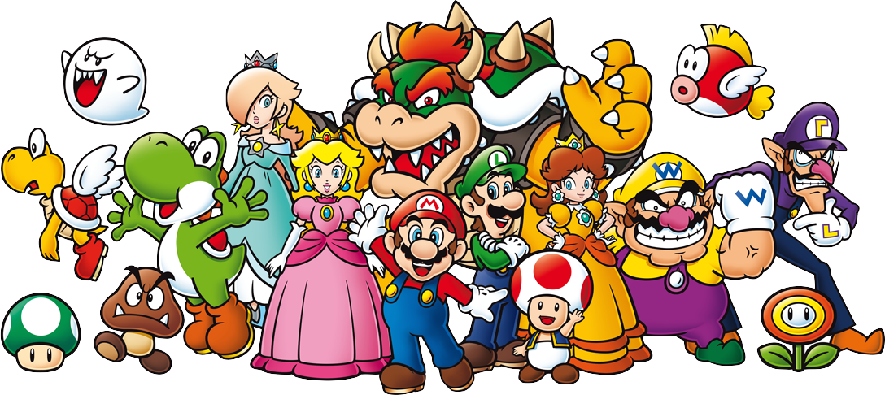
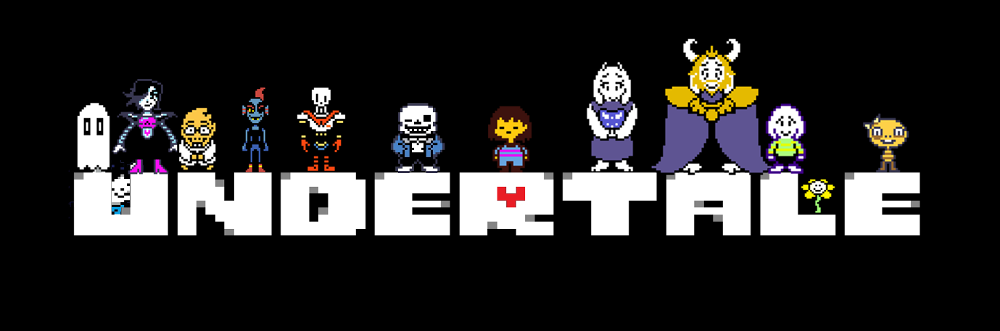
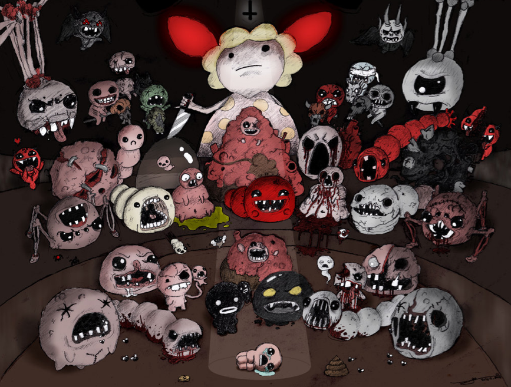

Minecraft

Minecraft is a three-dimensional sandbox game that has no specific goals for the player to accomplish, allowing players a great amount of freedom in choosing how to play the game. However, there is an achievement system. Gameplay by default is first person, but players have the option to play in third person mode. The core gameplay revolves around breaking and placing blocks. The game world is composed of rough 3D objects—mainly cubes—arranged in a fixed grid pattern and representing different materials, such as dirt, stone, various ores, water, lava, tree trunks, etc. While players can move freely across the world, objects can only be placed at fixed locations on the grid. Players can gather these material blocks and place them elsewhere, thus allowing for various constructions.
Mario
Mario (Japanese: マリオ) is a fictional character in the Mario video game franchise, owned by Nintendo and created by video game designer Shigeru Miyamoto. Serving as the company's mascot and the eponymous protagonist of the series, Mario has appeared in over 200 video games since his creation. Depicted as a short, pudgy, Italian plumber who resides in the Mushroom Kingdom, his adventures generally center upon rescuing Princess Peach from the Koopa villain Bowser. His younger brother and sidekick is Luigi.
Undertale
Undertale is a role-playing video game created by American indie developer and composer Toby Fox. In the game, players control a human child who has fallen into the Underground, a large, secluded region underneath the surface of the Earth, separated by a magic barrier. The player meets various monsters during a quest to return to the surface, mainly through the combat system; the player navigates through mini-bullet hell attacks by the opponent, and can opt to spare monsters instead of attacking and killing them. These choices affect the game, with the dialogue, characters, and story changing based on outcomes.
The Binding of Isaac
The Binding of Isaac is an independent roguelike video game designed by Edmund McMillen and Florian Himsl. The game's title and plot were inspired by the Biblical story of the Binding of Isaac. After his mother receives a message from God demanding the life of her son as proof of her faith, Isaac flees into the monster-filled basement of their home, where he must fight to survive. Players control Isaac through a procedurally generated dungeon in a roguelike manner, defeating monsters in real-time combat while collecting items and power-ups to defeat bosses and eventually Isaac's mom.